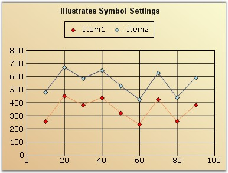
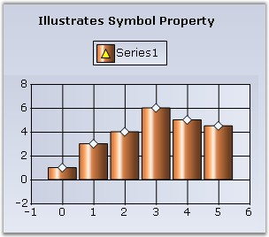

There are several options to customize the image rendered in the Legend. The following properties let you do so:
|
ChartLegend Property |
Description |
|
ShowSymbol |
If true, the exact symbol rendered in the series data points will be used to render the icon in the legend as well. This overrides most of the other settings. |
|
RepresentationType |
Specifies how each legend item should be represented, as the name implies: None (default setting) SeriesType - An icon representing the series type. SeriesImage - Will use the ImageList associated with the Series style. · Rectangle · Line · StraightLine · Circle · Diamond · Hexagon · Pentagon · Triangle · InvertedTriangle · Cross |
The following ChartLegendItem properties that can be accessed via the Legend.Items list typically override the above settings set in the Legend.
|
ChartLegendItem Property |
Description |
|
DrawSeriesIcon |
Specifies if an icon representing the series type should be rendered for this legend item. |
|
ImageList |
Contains a collection of images and will be referred to, by the ImageList property. |
|
ImageIndex |
Specifies the index into the ImageList array which contains the image for this item. |
|
Interior |
Specifies the BrushInfo used to render the interior of a Chart Symbol. |
|
RepresentationSize |
Specifies the size of the rectangle inside which the associated image or symbol will get rendered. |
|
ShowSymbol |
If true, the exact symbol rendered in the corresponding series data points will be used to render the icon in this legend as well. This overrides most of the other settings. |
|
Symbol |
Symbols rendered in the Legend item can be customized using this property. |
|
Type |
If ShowSymbol is false, you can customize the type of icon that gets rendered in the legend item. The default value will reflect the ChartLegend.RepresentationType setting. Possible Values: · Area · Circle · Cross · Diamond · Hexagon · Image · InvertedTriangle · Line · None · Pentagon · PieSlice · Rectangle · Spline · SplineArea · StraightLine · Rectangle |
|
ShowIcon |
If set to false, no icons will be rendered. This overrides most of the other settings including ShowSymbol. |
Series Type Icon
An icon representing the series type can be rendered in the legend.
To do this for all the legend items:
|
[C#]
this.chartControl1.Legend.RepresentationType = ChartLegendRepresentationType.SeriesType; |
|
[VB.NET]
Me.chartControl1.Legend.RepresentationType = ChartLegendRepresentationType.SeriesType |
Figure 285: Legend Item with the Series Type Icon
To do this for specific legend items,
|
[C#]
// The general setting affecting all Legend items could be anything this.chartControl1.Legend.RepresentationType = ChartLegendRepresentationType.SeriesImage;
// This will force a specific legend item to show a series icon this.chartControl1.Legend.Items[0].DrawSeriesIcon = true; |
|
[VB.NET]
'The general setting affecting all Legend items could be anything Me.chartControl1.Legend.RepresentationType = ChartLegendRepresentationType.SeriesImage
'This will force a specific legend item to show a series icon Me.chartControl1.Legend.Items(0).DrawSeriesIcon = True |
Series Symbol
You can also choose to show the exact same symbol that is shown in the data points in a series.
To do this for all the legend items:
|
[C#]
//Set symbol for first series this.chartControl1.Series[0].Style.Symbol.Shape = ChartSymbolShape.Diamond; this.chartControl1.Series[0].Style.Symbol.Color = Color.Red ; this.chartControl1.Series[0].Style.Symbol.Size = new Size(7, 7);
//This will cause the legend to render with the same symbol defined above. this.chartControl1.Legend.ShowSymbol = true;
//Setting RepresentationType to None to hide other representations this.chartControl1.Legend.RepresentationType = ChartLegendRepresentationType.None; |
|
[VB.NET]
'Set symbol for first series Me.chartControl1.Series(0).Style.Symbol.Shape = ChartSymbolShape.Diamond Me.chartControl1.Series(0).Style.Symbol.Color = Color.Red Me.chartControl1.Series(10).Style.Symbol.Size = New Size(7, 7)
'This will cause the legend to render with the same symbol defined above. Me.chartControl1.Legend.ShowSymbol = True
'Setting RepresentationType to None to hide other representations Me.chartControl1.Legend.RepresentationType = ChartLegendRepresentationType.None |

Figure 286: Legend Items rendered with the Same Symbol
Custom Representation Icon
You can also choose to use one of the built-in representation icons in the legend items.
To do this for all the legend items:
|
[C#]
this.chartControl1.Legend.RepresentationType = ChartLegendRepresentationType.Diamond;
// To specify a custom color for the interior of the icon this.chartControl1.Legend.Items[0].Interior = new BrushInfo(Color.Violet); |
|
[VB.NET]
Me.chartControl1.Legend.RepresentationType = ChartLegendRepresentationType.Diamond
'To specify a custom color for the interior of the icon Me.chartControl1.Legend.Items(0).Interior = New BrushInfo(Color.Violet) |
Figure 287: Legend Item with a Custom Representation Icon
To do the above only on specific legend items, use the ChartLegendItem.Type property.
More Symbol Shapes
ChartLegendItem has the Symbol property, using which we can customize the symbols for particular legend items. This setting overrides the Series[0].Style.Symbol settings.
|
[C#]
//Series symbol settings chartControl1.Legend.ShowSymbol = true; chartControl1.Series[0].Style.Symbol.Shape = ChartSymbolShape.Diamond; chartControl1.Series[0].Style.Symbol.Color = Color.AliceBlue;
//the above symbol settings is overridden by the following settings chartControl1.Legend.Items[0].Symbol.Shape = ChartSymbolShape.Triangle; chartControl1.Legend.Items[0].Symbol.Color = Color.Yellow; |
|
[VB.NET]
'Series symbol settings chartControl1.Legend.ShowSymbol = True chartControl1.Series(0).Style.Symbol.Shape = ChartSymbolShape.Diamond chartControl1.Series(0).Style.Symbol.Color = Color.AliceBlue
'the above symbol settings is overridden by the following settings chartControl1.Legend.Items[0].Symbol.Shape = ChartSymbolShape.Triangle chartControl1.Legend.Items[0].Symbol.Color = Color.Yellow |

Figure 288: LegendItem customized with "Triangle" Symbol in "Yellow" Color
Custom Images
You can also choose to show custom images in the legend items as follows:
|
[C#]
// Setting the representation type for the Legend items this.chartControl1.Legend.RepresentationType = ChartLegendRepresentationType.SeriesImage; //Setting the image index this.chartControl1.Legend.Items[0].ImageIndex = 0; // The image will be picked up from this collection series1.Style.Images = new ChartImageCollection(this.imageList1.Images);
// Or from this collection, if available this.chartControl1.Legend.Items[0].ImageList = new ChartImageCollection(this.imageList1.Images); |
|
[VB.NET]
'Setting the representation type for the Legend items Me.chartControl1.Legend.RepresentationType = ChartLegendRepresentationType.SeriesImage 'Setting the image index Me.chartControl1.Legend.Items(0).ImageIndex = 0
' The image will be picked up from this collection series1.Style.Images = New ChartImageCollection(Me.imageList1.Images)
' Or from this collection, if available Me.chartControl1.Legend.Items(0).ImageList = New ChartImageCollection(this.imageList1.Images) |
Figure 289: Chart Legend Items with Custom Images
Hiding Icons
Icons for legend items can be hidden in any of the following ways:
|
[C#]
this.chartControl1.Legend.RepresentationType = ChartLegendRepresentationType.None;
// To do this for a specific legend item:
// This will not even allocate any space for the icons this.chartControl1.Legend.Items[0].ShowIcon = false;
// Or, set this. This will not render the icons, but will allocate some empty space for it this.chartControl1.Legend.Items[0].Type = ChartLegendItemType.None; |
|
[VB.NET]
Me.chartControl1.Legend.RepresentationType = ChartLegendRepresentationType.None
'To do this for a specific legend item
'This will not even allocate any space for the icons Me.chartControl1.Legend.Items(0).ShowIcon = False
'Or, set this. This will not render the icons, but will allocate some empty space for it Me.chartControl1.Legend.Items(0).Type = ChartLegendItemType.None |
See Also